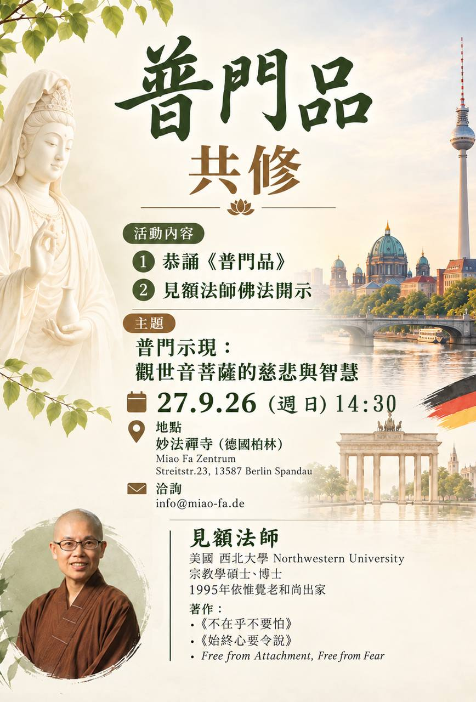
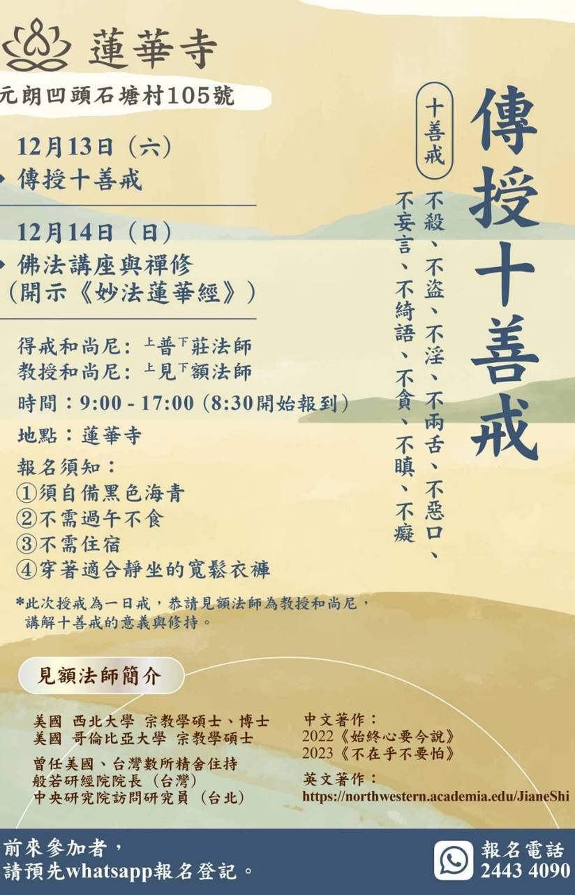
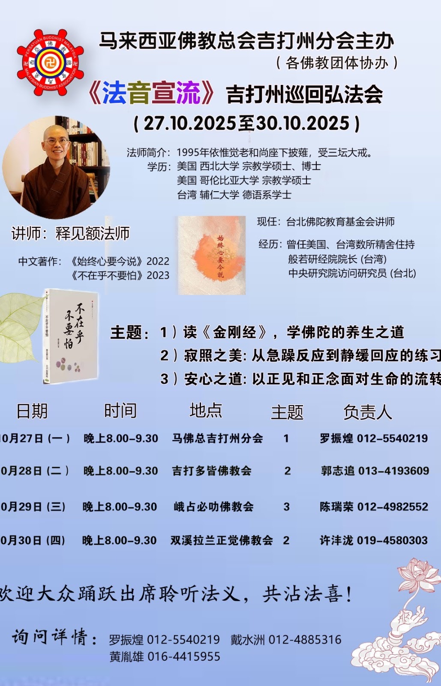

這是法訊新版預覽，原版仍在 faxun.html。改法對應影片：高度（給結果不是給清單）、深度（專家方法＋驗證）、廣度（名詞換動詞）。
法訊
不知道參加哪一場？先選一種人，對號入座
❋ ❋ ❋
30 秒挑一場適合你的
正在進行的活動


第一次來？先看這三題
要準備什麼？人來就好，穿寬鬆衣服。提早 10 分鐘到，有人帶位。
可以直接去嗎？建議先 LINE 留言報名，滿額活動以報名優先。
要費用嗎？隨喜。詳情點行事曆活動名稱，或來信 buddhaworld2000@gmail.com。
歷史活動







2024 年，見額法師於香港元朗舉行八關齋戒，與當地居士結法緣。